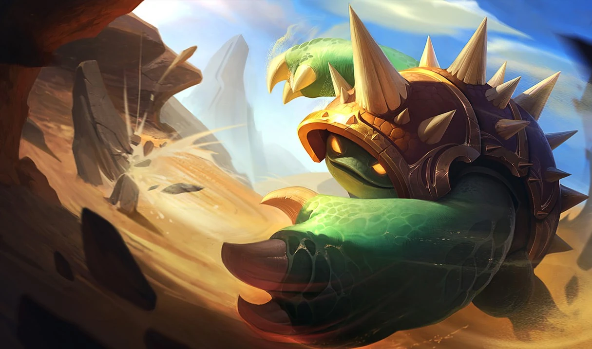

|

|
 |
QUE ES LEAGUE OF LEGENDS
League of Legends también conocido por sus siglas LoL es un videojuego multijugador de arena de batalla en línea desarrollado y publicado por Riot Games. Inspirándose en Defense of the Ancients, un mapa personalizado para Warcraft III, los fundadores de Riot buscaron desarrollar un juego independiente del mismo género.
MUNDIALES
Lo mas importante a destacar son sus mundiales, posiblemente los mas conocidos a nivel mundial en el mundo del videojuego. Esto lo podemos ver a la hora de ver los visualizadores que tiene incluso para ciertas horas en algunos paises, por ejemplo, en 2023 en España empezaban a las 4:00 de la mañana. Los mundiales empezaron en el año 2011, es decir, dos años después de que saliera el juego (27 de octubre de 2009), poco a poco se iban haciendo cada vez mas conocidos hasta llegar al punto de hoy en dia. El equipo que mas mundiales ha ganado a sido SK Telecom T1, mas conocido como, SKT T1, este equipo ha ganado un total de 4 veces en 2013, 2015, 2016 y 2023. Gracias a este equipo se ha dado a conocer un nombre que cualquier persona seria capaz de reconocer si jeuga a este juego e incluso personas que nunca lo han jugado conocerian el nombre, esa persona no es nada mas y nada menos que Faker, considerado el mejor jugador del mundo por cualquier jugador. Algo muy notable es el hecho de las skins, que quiero decir con esto, cada vez que un equipo gana un mundial se crean unas skins con los personajes de la ultima partida que les dio la victoria, de ahí que haya skins que se llamen como algunos equipos.
CAMPEONES
Una de las principales caractericticas del LOL es su gran variedad a la hora de poder escoger un personaje para jugar. Este juego consta con mas de 150+ personajes que estan divididos en seis categorias: Asesinos, Luchadores, Magos, Tiradores, Apoyos y Tanques, por suerte, no se queda solo en esos seis tipos, también se pueden mezclar, es decir, un personaje peude pertenecer a varias categorias y cambiara en funcion de a que categorias pertenezca aparte puede tirar mas de un lado que de otro. Todas estas caracteristicas sobre los personajes es lo que permite su gran variedad. Los personajes o campeones tienen una dificultad: facil, medio o dificil, para escoger una dificultad se basan en los combos que tienen su habilidades, sus daños, su maná si tiene o su vida entre otras caractericticas. Aqui os dejo unos enlaces a algunos de los personajes para poder profundizar más sobre estos.